MIKAGE の使い方
衛星画像の撮像計画・撮像依頼から、届いた画像の判読と観測記録までを QGIS で行うプラグインの、毎日の作業の手引きです。設定ファイルの書き方やサーバー側の表の作り方は、管理者向けの説明（README）にあります。
はじめに
MIKAGE（ミカゲ。MIssion Kit for Applied GEospatial-intelligence の略）は、次の作業をひとつの QGIS でまとめて行うためのプラグインです。どの作業も、組織で共有している同じサーバー（ArcGIS）の表を読み書きするので、ほかの人の計画や記録もそのまま見えます。
| 担当 | おもな作業 |
|---|
| 撮像計画の担当 | どの衛星がいつ対象を撮れるかを調べ、撮像計画を保存する。定点・臨時の撮像依頼を登録し、毎日の撮像計画ファイルを出力する |
| 撮像を依頼する人 | 撮りたい場所・期間を撮像依頼として登録し、その依頼が計画に入ったか（採否）と、次にいつ撮るかを確かめる。計画の計算やファイルの書き出しはしない |
| 観測記録の担当 | 届いた画像を開いて、写っているモノ（船・航空機・車両・建物など）の位置・種別・活動を記録する。分担・通報・引き継ぎをする |
| 画像判読 | 画像を見やすく補正し、2 時期を比べ、影から高さを測るなどして、モノを見分ける |
| AI 学習の担当 | 教師データセットを作り、物体検出の AI を学習させる。AI結果を確かめて追加学習する |
| 管理者 | サーバーの表につながるかの点検、監査ログの確認、設定ファイルの切り替えなど |
担当は自分の作業に合うものをいくつでもチェックできます。チェックした担当で使う機能だけがメニュー・ツールバー・ドックのボタンに出て、その作業に使うドック（画面の横に出る作業用のパネル）がそろいます。どれもチェックしなければ、管理者の機能のほかはすべて出ます。担当はいつでも変えられます。
最初にすること
1. 担当と個人設定を選ぶ
プラグインを初めて入れたときだけ「最初の設定」の画面が出ます。あとで変えるときは、メニュー 担当と個人設定… から開きます。
- 担当: 撮像計画の担当・撮像を依頼する人・観測記録の担当・画像判読・AI 学習の担当・管理者から、自分の作業をいくつでもチェックします。その作業のドックが開き、メニューとツールバーにはその作業の機能が並びます（ほかの担当の機能は出ません）。チェックした担当のドックで開き直す を外すと、ドックは今のまま
- ドックの開き方: メイン画面にタブでまとめるか、ドックごとに別ウィンドウで開くか。モニターが 2 台あるなら、別ウィンドウにして片方へ寄せると地図を広く使えます
- 記録者名: 観測記録に残るあなたの名前。クリック数（観測記録で 1 件に打つ点の数）とカーソル位置の表記（10 進・度分秒・MGRS・UTM）もここで
「あとで」で閉じても、次から画面は出ません。
2. 設定ファイルを確かめる
どのサーバーを使うか、どの画像カタログを探すかなどは、管理者が用意した設定ファイルで決まります。多くの場合はプラグインに同梱されていて、何もしなくても読み込まれます。
- QGIS の上のほうに黄色い帯（メッセージバー）で「問題 n 件」と出たら、その帯の 設定… を押して内容を見てください。自分で直せないときは、画面を管理者に見せます
- 設定ファイルの場所を指定するよう言われたときは、メニュー 設定… で、もらったパスか URL を入れて「読み込み」
- サインインが必要なサービスは、同じ「設定…」の表でサービスごとに QGIS の認証設定を選びます（どれを選ぶかは管理者の指示に従ってください）
3. つながるか点検する（管理者）
担当 管理者 をチェックした人は、メニュー 接続と表の点検… で、設定ファイルにあるサービスに 1 回ずつ問い合わせられます。書き込みはしないので、いつ押しても大丈夫です。ほかの担当の人は、一覧が出ないときに管理者へ知らせてください。
- 問題（赤）: その表は使えません。サインインできない・応答がない・必要な項目がない など
- 注意: 一部の機能だけ働きません
- OK: 使えます
問題があれば 結果をコピー を押し、メールなどに貼って管理者に送ってください。
画面のつくり
| 場所 | 中身 |
|---|
| メニュー | QGIS のメニュー「プラグイン」→「MIKAGE」。分野ごとのサブメニュー（撮像計画・撮像依頼・観測記録・画像・解析・処理・AI・地図・レイヤー）と、その下に「イベント」「担当と個人設定…」「設定…」など。選んだ担当で使う機能は、すべてここから開けます（ほかの担当の機能は出ません） |
| ツールバー | ツールバー「MIKAGE」。担当ごとによく使うボタンだけが並びます。足りないボタンは ツールバーのボタン… で足せます |
| ドック | 地図の左右に出る作業用のパネル（画像カタログ・撮像計画・観測記録など）。タブで重なっているので、下のタブで切り替えます |
| 地図の上のタブ | 「新着画像」を開いている間だけ、地図の上に「地図｜新着画像」のタブが出ます。地図の場所を大きな画面に切り替えるためのもので、地図 のタブで地図に戻ります |
| メッセージバー | 地図の上に出る帯。保存できなかった・読み込めなかったなどのお知らせと、その場で押せるボタンが出ます |
| ステータスバー | 画面のいちばん下。右のほうにカーソル位置の緯度経度（または MGRS・UTM）が出ます |
このヘルプで「メニュー 画像 ▸ スワイプ比較」と書くのは、MIKAGE のメニューの「画像」の下の「スワイプ比較」のことです。
画面つきの手順書
よくある 3 つの作業を、画面の写真で順に追います。写真の赤い枠と番号（①②…）が、押す所・見る所です。写真は練習用の見本データで撮ったもので、名称・日付・件数はお使いの環境とは違います。ボタンがツールバーにないときは、担当と個人設定 で担当を選ぶか、ツールバーのボタン… で足してください。
画像を探して記録し、担当を完了する（観測記録の担当）
届いた画像を 1 枚選んで、写っている船を記録し、見終わったら分担を「完了」にするまでです。くわしい説明は 画像を探して開く・1 枚の画像の流れ・分担 にあります。
1. 画像を探す。ツールバーの 画像カタログ（①）でドックを出し、範囲（②。既定は今の地図の表示範囲）と 撮像日時（③）を入れて 検索（④）。一覧は新しい順で、分担 の列に「未着手」「作業中（名前）」などが出ます。
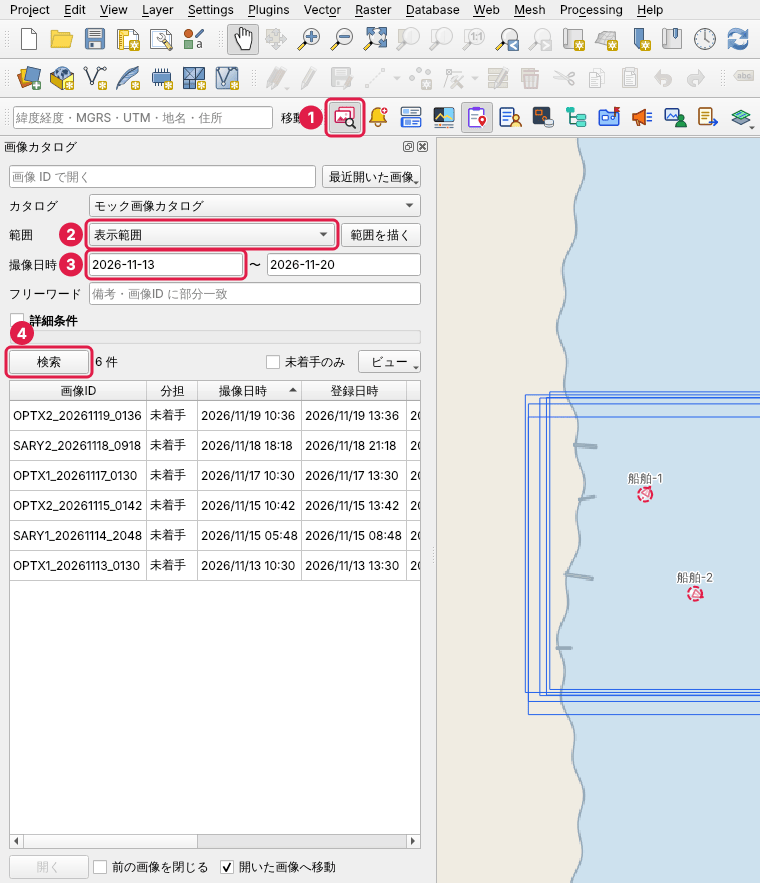
2. 画像を開く。見る画像の行を選び（①）、開く（②）かダブルクリック。画像が地図に入り、地図がその画像へ移ります。
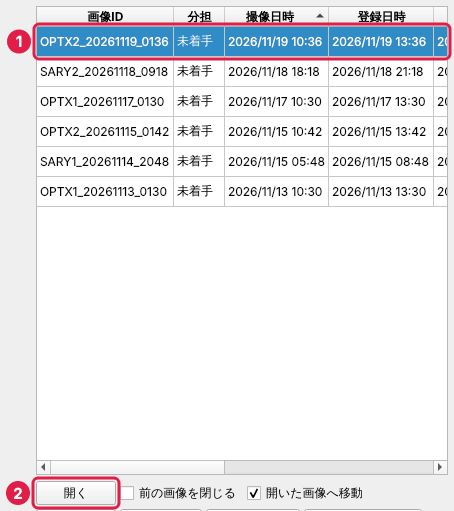
3. 観測記録ドックで確かめる。ツールバーの 観測記録 でドックを出します。保存先（①）、いま開いた画像（②）、その画像の分担の行（③。まだ誰も担当していなければ「担当者なし」）を確かめます。前の画像で記録したモノは、地図に白抜きの印、一覧に灰色の行で出ます。
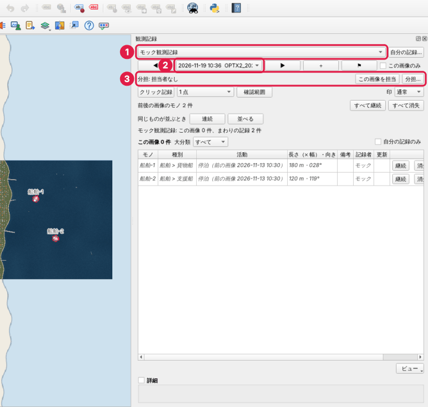
4. クリック記録を始める。クリック記録（①、R）を押します。記録を始めると、この画像は自動で自分の担当になります（②「分担: 自分が担当中」）。
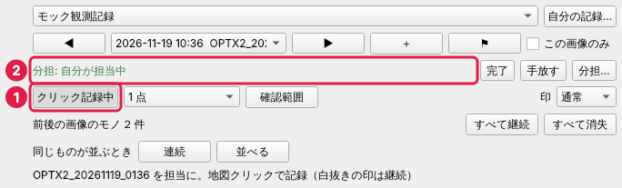
5. 地図でモノをクリックする。拡大して、記録するモノ（①）をクリックします。
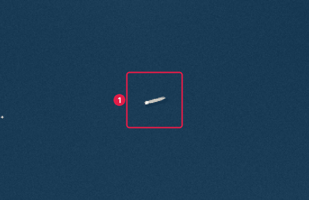
6. 種別・活動を入れて記録する。フォームの 大分類 ▸ 種別 ▸ 級 のボタンで種別をたどり（①）、活動（②。ボタンか数字キー 1〜9）、確度（③）、必要なら備考を入れて 記録（④、Enter）。記録はその場で保存先に保存されます。保存できなかったときは、入れた内容のままフォームが戻ります。
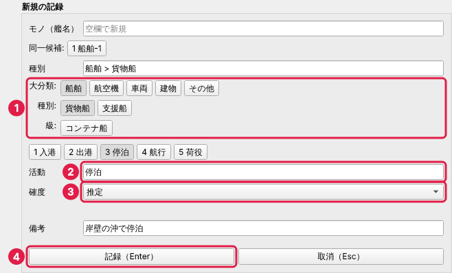
7. 前の画像にいたモノを確かめる。白抜きの印（①）は、前の画像で記録したモノです。クリックするとそのモノのフォームが出るので、まだいれば 継続（②、Enter）、いなければ 消失（③）。全部まだいるなら、ドックの すべて継続 でまとめて継続に、全部いなくなっていれば すべて消失 でまとめて消失にできます。
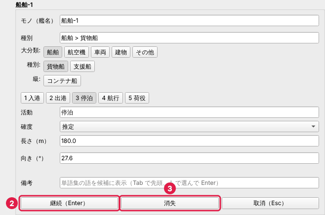
8. 記録を確かめる。記録したモノは一覧（①）と地図に出ます。灰色の行は、前の画像のモノでこの画像ではまだ確かめていないものです。残っていれば 7. と同じように継続か消失にします。
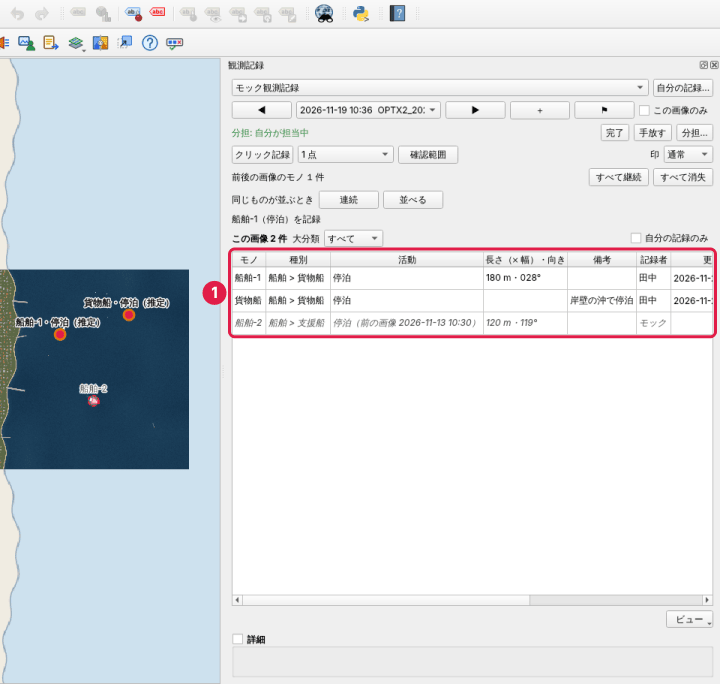
9. 分担を完了にする。見終わったら、分担の行の 完了（①）。行が「担当者なし（○○ さんが完了済み）」に変わります。
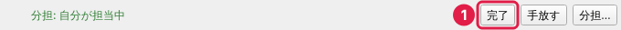
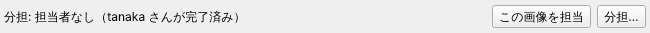
画像カタログの 分担 の列も「完了（名前）」になり、ほかの人にも見終わった画像だと分かります。次の画像は、観測記録ドックの ▶（PageDown）か画像カタログから開きます。
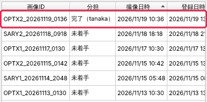
撮像を依頼して、計画に入ったか確かめる（撮像を依頼する人）
撮りたい場所と期間を依頼として登録し、その依頼がどの日の計画に入ったかを確かめるまでです。依頼を集めて計算し、各システムにファイルを出して採否を入れるのは撮像計画の担当です（撮像計画を計算して出し、採否を入れる）。依頼する人は、ここにある画面だけを使います。担当と個人設定 で担当を 撮像を依頼する人 にすると、撮像依頼と撮像予定のドックが右に、地点ごとの撮像予定が地図の下に開き、ツールバーには依頼と確認に使うボタンだけが並びます。くわしい説明は 撮像依頼を登録する・その日の撮像予定を見る にあります。
1. 撮像依頼ドックを出す。ツールバーの 撮像依頼（①）。グループの欄を開いて 自分のグループ（②）にチェックを入れると、自分のグループの依頼だけになります。新規…（③）で依頼のフォームを開きます。
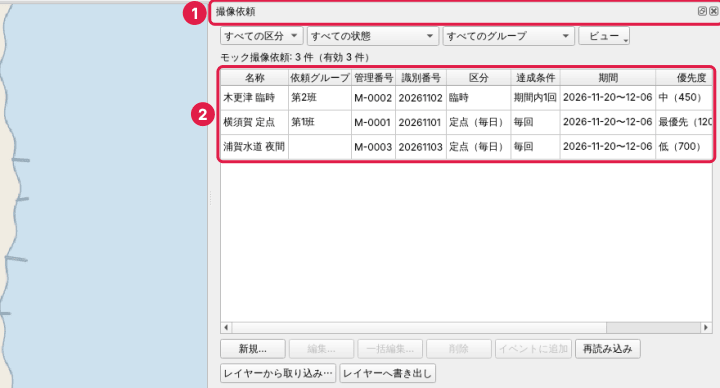
2. 依頼の内容を入れる。
- 名称（①）: あとで一覧や撮像予定で見分けられる名前
- 依頼グループ（②）: 自分のグループ
- 区分（③）: 期間中に 1 回撮ればよいなら 臨時（達成条件「期間内1回」）、毎日・曜日ごとに撮るなら 定点
- 期間（④）: 撮ってほしい最初と最後の日（日本時間）
- 優先度（⑤）: 5 段階から選ぶ
- 種別（⑥）: 光学・SAR・任意。衛星にチェックを入れなければ、どの衛星でもよい依頼になります
- 地図で矩形（⑦）を押して、地図をドラッグして範囲を囲む（多角形・点・選択中の地物でも可）
- 範囲の下（⑧）に、期間内に衛星が撮れる回数が出ます。赤で「撮像機会なし」のときは、期間・種別・範囲を見直します
- 依頼者・メモを入れて 保存（⑨）
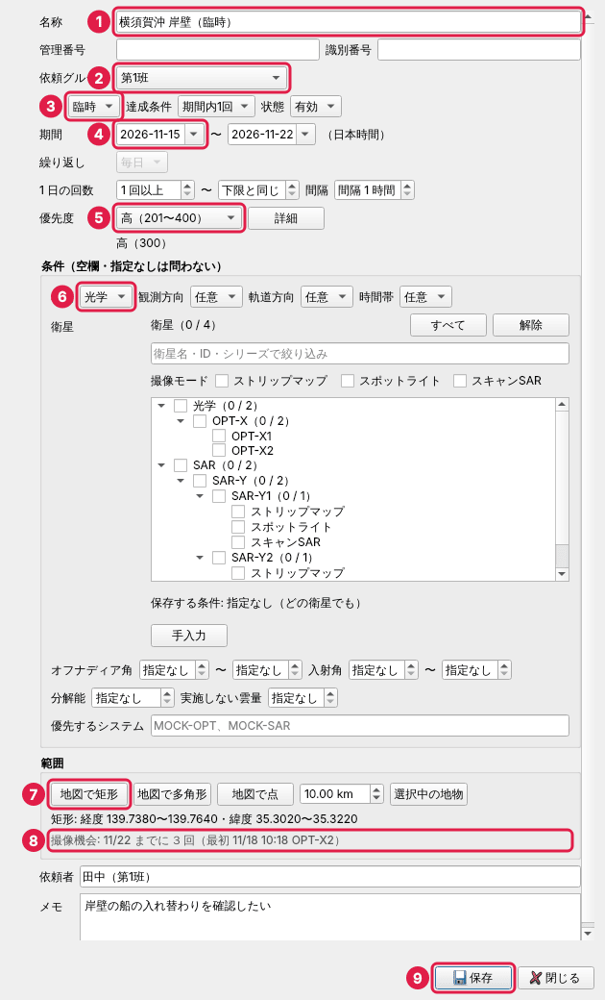
囲んだ範囲は地図に出ます。
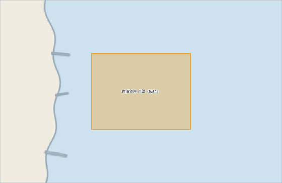
3. 一覧で確かめる。保存した依頼が一覧に入ります。これで依頼は終わりです。直すときは行を選んで 編集…。
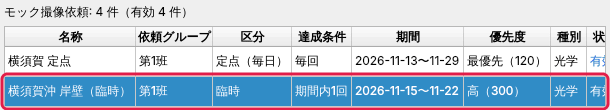
4. たくさんの場所をまとめて依頼する（レイヤーから取り込み）。見たい港・岸壁の一覧のように、依頼したい場所がレイヤー（ポリゴン・点・線）になっているときは、地物ごとに 1 件の依頼をまとめて作れます。レイヤーを QGIS に入れておき、撮像依頼ドックの レイヤーから取り込み…（①）を押します。

取り込むレイヤー（①）と、依頼の名称にする属性（②）を選びます。管理番号・識別番号にする属性があれば、それも選びます（③）。一部の地物だけなら、地図で地物を選んでから 選択中の地物のみ。点の地物は、点の範囲の一辺 の正方形が範囲になります。範囲・名称・番号だけ取り込み…（④）のまま 次へ（⑤）。
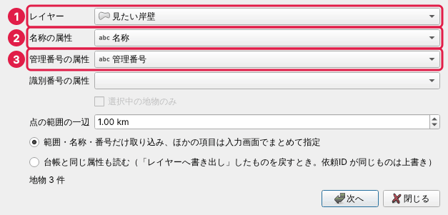
依頼のフォームが「レイヤーから取り込み（3 件）」として開きます。名称（①）と範囲（②）は地物ごとのものが入り、取り込む範囲は地図に橙で出ます。区分（③）・期間（④）・優先度（⑤）・種別など残りの項目を 1 回だけ入れて 保存（⑥）すると、全部の地物に同じ値が入ります。
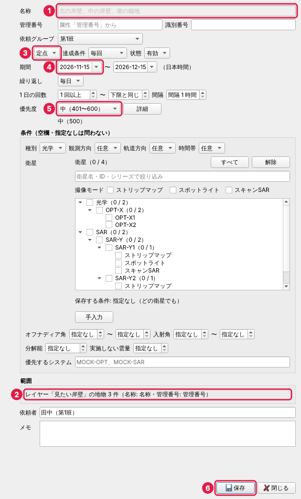
地物の数だけ依頼が一覧に入り、状況欄に「3 件を取り込み」と出ます。あとで 1 件ずつ直すときは 編集…、まとめて直すときは Ctrl・Shift + クリックで選んで 一括編集…。
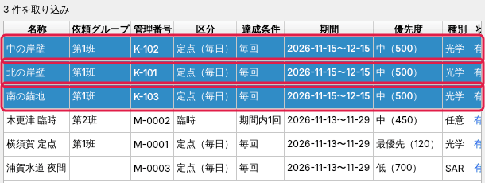
5. 計画に入ったかを見る。撮像計画の担当が計算・書き出しをしたあと、ツールバーの 撮像予定（①）を開き、カレンダーで日を選びます（②。太字が計画のある日、緑は計画に入ったものがある日）。グループの欄で 自分のグループ（③）にチェックを入れると、自分の依頼（④）が見つけやすくなります。
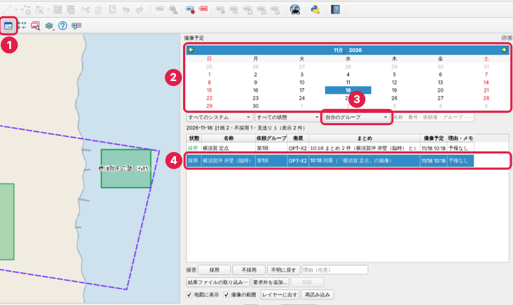
6. 状態を読む。
- 状態: 採用（システムの計画に入った）・不採用・不明（まだシステムの返事がない）・見送り（その日はシステムに出さなかった）。見送りは、状態の欄で 見送り にもチェックを入れると出ます（最初は 見送り以外）
- まとめ: 撮り方。「10:21 まとめ 2 件（… と）」は近くの依頼と 1 回の撮像でまとめて撮ること、「同乗」はほかの依頼の撮像で一緒に撮ること、「単独」はこの依頼だけの撮像
- 撮像予定: システムが返してきた撮像の日時。理由・メモ: 見送り・不採用の理由など
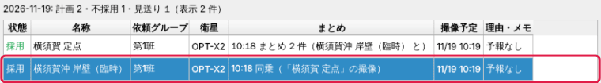
見送り・不採用のままなら、次の日以降の計算でまた候補になります（期間内 1 回の依頼）。画像が入って撮像済みになると、状態は自動で「採用」になり、画像は 画像カタログ で探せます。
7. 次にいつ撮るかを見る。地点ごとの撮像予定 で 地図で地点を追加（①）を押し、地図で依頼した場所をクリックします。その地点の計画がタイムライン（②）に並び、名前の下に「次」の撮像（日時・状態・衛星）が出ます。水色の帯は、依頼がまだ計画前の日です。
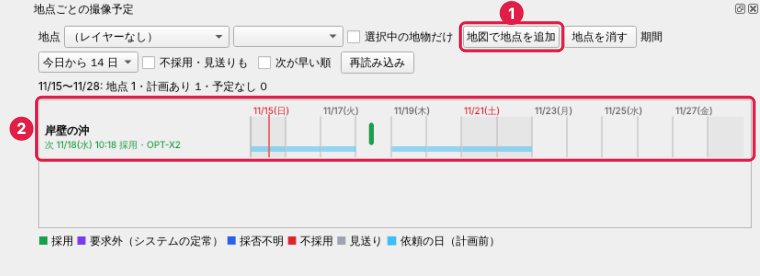
撮像計画を計算して出し、採否を入れる（撮像計画の担当）
依頼台帳から対象日の計画を計算し、調整システム（各衛星システム）に渡すファイルを書き出し、返ってきた採否を入れるまでです。くわしい説明は 毎日の撮像計画ファイルを出力する・その日の撮像予定を見る にあります。
1. 計算する。ツールバーの 撮像計画ファイル出力（①）を開き、対象日（②）を選んで 計算（③）。依頼が一覧（④）に並び、システムごとの上限と優先度に合わせて採用・見送りが決まります。
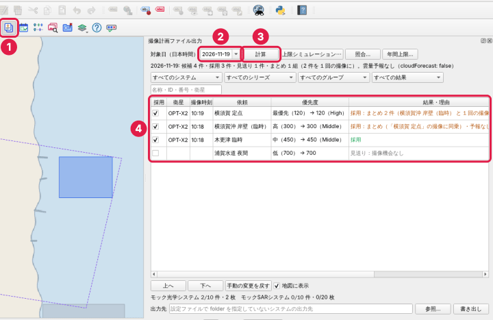
2. 一覧を確かめる。採用 のチェックが入った行がファイルに出ます。チェックを外すと見送り、入れると枠を超えても採用です。撮像時刻 は衛星が上を通る時刻、優先度 は依頼の優先度と、この日の計算での優先度（矢印の右）です。結果・理由 に「まとめ 2 件（… と 1 回の撮像）」「見送り：撮像機会なし」などが出ます。
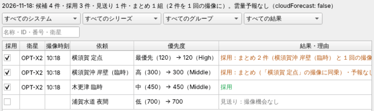
地図に表示 にチェックを入れると、依頼の範囲（採用は緑、まとめは青、見送りは灰）と撮像の範囲（紫の破線）を地図で確かめられます。
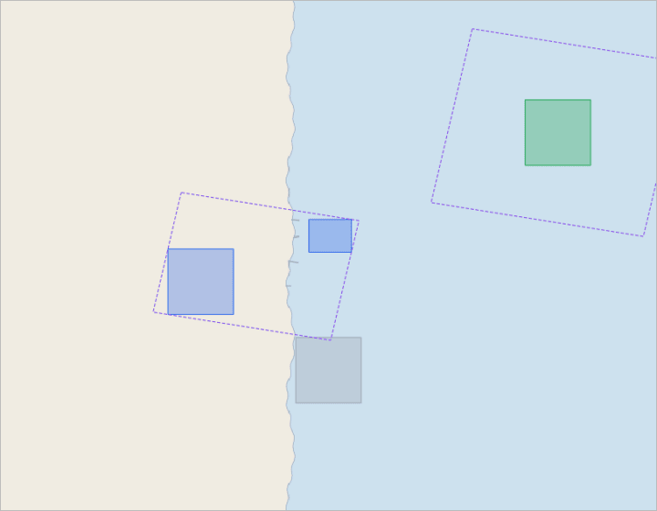
3. 書き出す。出力先（①）を確かめて 書き出し（②）。出力先が設定ファイルで決まっているシステムは、そちらに書きます。
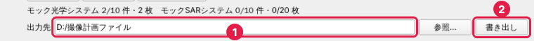
システムごとのファイル名と件数を確かめて はい。
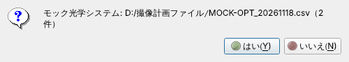
書き出すと、状況欄に件数が出て、出した内容が出力履歴に残ります。書き出したファイルを調整システムに渡します。
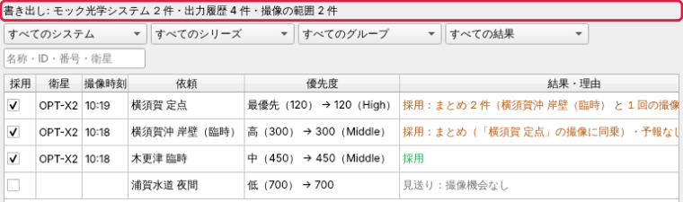
4. 返ってきた採否を入れる。ツールバーの 撮像予定（①）を開き、カレンダーで対象日（②）を選びます。書き出したばかりの依頼は「不明」です。システムから採否のファイルが返ってきたら 結果ファイルの取り込み…（③）でそのファイルを選びます。
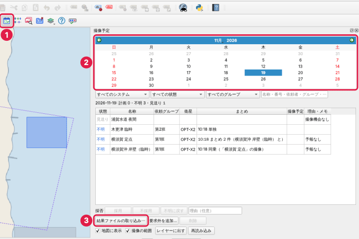
読み取った採用・不採用の件数を確かめて はい。ファイルにない依頼は「不明」のままです。まとめて撮る依頼は、同じ撮像のほかの依頼にも同じ採否が付きます。
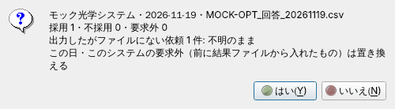
5. 電話などで聞いた採否を入れる。行を選び（①）、理由（③。任意）を入れて 不採用（②）か 採用。間違えたときは 不明に戻す。
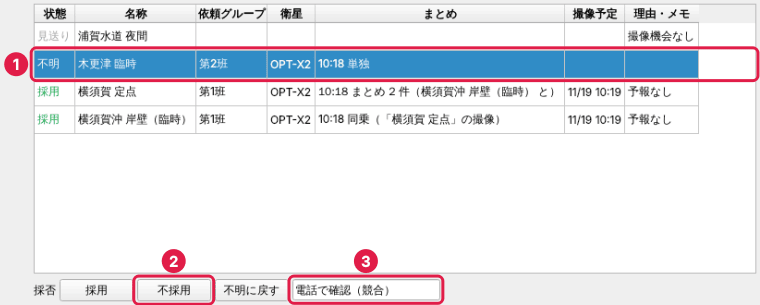
これで、その日の計画が採用・不採用・見送りに分かれました。依頼した人は同じ 撮像予定 で確かめます（撮像を依頼して、計画に入ったか確かめる）。画像が届いたら、照合… で撮れたかを画像カタログと突き合わせます。
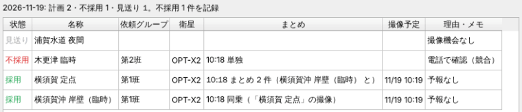
どの担当でも使う操作
ドックを出す・片付ける
- ドックはメニューかツールバーのボタンで開きます。もう一度押すと前面に出ます
- ドックが見つからない・画面の外に行ってしまったときは、メニュー ドックを初期位置に戻す
- 作業ごとの並びを覚えさせるには、メニュー ドックのレイアウト ▸ 現在の配置を保存…。名前を付けて保存すると、次から 1 回で切り替えられます。「撮像計画の担当」「撮像を依頼する人」「観測記録の担当」「画像判読」「AI 学習の担当」の例も最初から入っています
一覧を見やすくする
ドックの一覧は、見出しを右クリックすると列を出したり隠したり、順番を変えたりできます。右クリックした列は この列を左へ・この列を右へ・この列を先頭へ・この列を末尾へ で動かし、まとめて変えるときは 列の表示と順番… でチェックと 上へ・下へ を使います（見出しのドラッグでも動かせますが、設定ファイルでドラッグを止めている場合はメニューだけです）。並びは一覧ごとに覚えます。画像カタログ・観測記録・撮像依頼の一覧の横の ビュー では、今の見え方（列・並べ替え・絞り込み）に名前を付けて保存し、あとで 1 回で戻せます。どれもあなたの PC だけの設定で、ほかの人には影響しません。
画像を探して開く（画像カタログ）
画像カタログ ドック（Ctrl+Alt+I）で、届いた衛星画像を探します。
- 範囲を選ぶ。既定は今の地図の表示範囲。範囲を描く で多角形を描く（クリックで頂点、ダブルクリックか右クリックで確定、Esc で取り消し。描いている途中の形も地図に出ます）、レイヤー で選んだレイヤーの形とも重ねられます。描いた範囲は横の 保存… で名前を付けて保存でき、次からは範囲を 保存した範囲 にして一覧から選べます（新しい順。選んだ範囲は地図に緑の破線で出て、見えない場所ならそこへ地図が移ります。編集 で範囲へ移動・名前の変更・削除。保存先はあなたの PC だけです）
- 撮像日時を入れ（2026-11-09 のほか 2026/11/9・20261109・全角の数字でも可。日付だけならその日いっぱい。時刻をつけると分の単位で絞れます: 2026-11-09 10:30 〜 2026-11-09 12:00 は 10:30 から 12:00 台の終わりまで。右に 12:00 と時刻だけ書けば左と同じ日。時刻はこの PC の時刻で、一覧の撮像日時と同じです。読めない日付・時刻は検索せずに知らせます）、必要なら 詳細条件 でセンサー・角度などを絞る。フリーワード 欄では、画像 ID の一部や、備考などに含まれる語でも探せます（画像 ID はどのカタログでも対象。空白で区切ると、すべての語を含む画像。大文字・小文字、ひらがな・カタカナ、全角・半角は区別しません。Enter でも検索）
- 検索。一覧は新しい順。行を選ぶと地図にその画像の範囲（橙）が出ます。多いときは新しい 500 件（数は設定ファイルによる）までで、状況欄に「1234 件中 新しい 500 件」と出ます。一覧の下の 続きを読む で、同じ検索のもっと古い画像を足せます
- 開く かダブルクリックで、画像がレイヤーとして地図に入り、地図がその画像の範囲へ移ります（何枚も開いたときは、すべてが入る範囲。レイヤーの名前は画像 ID）
- 一覧を順に見ていくときは、開く の横の 前の画像を閉じる にチェック。次の画像を開くと、その前にここから開いた画像は地図から外れます（チェックは次回も残ります）
- 開いても地図を動かしたくないとき（拡大した場所のまま別の日の画像を重ねるときなど）は、開いた画像へ移動 のチェックを外します
- 地図の範囲（フットプリント）が画像の邪魔なときは、ボタンの並びの フットプリント で 枠だけ（ふだんはこれ）・塗りつぶし・非表示 を選べます。非表示でも 地図で選択 のクリックで選べます
- 初めて開くとき「フォルダを選んで」と聞かれたら、画像が置いてある共有フォルダを選びます（次からは覚えています）
- 画像のファイルをエクスプローラーで見たいときは、選んで フォルダを開く。画像のあるフォルダが開き、そのファイルが選ばれた状態になります（フォルダの画像はそのフォルダ）。パスの読み替えを設定している職場では、読み替えた先のフォルダが開きます
- 画像 ID がわかっているときは、ドックのいちばん上の 画像 ID で開く 欄に貼って Enter。検索の条件を入れなくても、その画像が開きます
- 一度開いた画像は、この PC が覚えています（画像 ID・カタログ・開いたファイル。最近の 300 枚）。同じ画像をもう一度開くときは、カタログに問い合わせずに 前回のファイルで開く の確認が出ます。前回開いたファイルにチェックが付いているので、そのまま Enter（違うファイルにするならチェックを変える）。ファイルが移動して見つからないときは カタログで探し直す。最近開いた画像 ボタンからも同じように開けます
- 生データが別のシステムにしかない画像（カタログだけある画像）は、選んで ファイルなしで記録。画像 ID・撮像日時・範囲がそのまま観測記録に入り、地図がその場所へ移るので、背景地図の上をクリックして記録します（複数選べば ◀ ▶ で順に）。そういう画像だけのカタログでは、開く の代わりにこのボタンが出ます。ふつうのカタログでも、画像が開けなかったときはメッセージの横に出ます
- ファイルなしで記録している画像は、レイヤー一覧のいちばん上のグループ ファイルなしの画像 に、フットプリントの紫の枠のレイヤーとして 1 枚ずつ入ります（記録中の画像は太い線）。レイヤーを選ぶとその画像に切り替わります。終わった画像は、開いた画像を閉じるのと同じように、そのレイヤーを削除すると観測記録の一覧から外れます（記録は残ります）
- 分担を使っている職場では、一覧の最後の列に「未着手」「作業中（名前）」などが出ます。未着手のみ で、まだ誰も手を付けていない画像だけにできます
- 同じ条件で新しい画像を待ちたいときは この条件で監視…。新着は 通知 ドックに出て、ツールバーの「通知」に未読数が付きます。地図の右クリック「この地点の新着画像を監視…」でも作れます。条件に合う画像は、監視を作ったときにすでにあったものもすべて一覧に入ります（既読で、「設定前から」と出ます）
- 港や基地など、決まった場所の形で見張りたいときは、監視の範囲で レイヤー を選び、その場所のレイヤーを選びます（一部だけなら地物を選んで 選択地物のみ）。監視はそのときの形を写して覚えるので、あとでレイヤーを直したら、通知ドックの「監視条件」タブで監視を選んで 範囲の変更… を押し、取り直します
入ってきた画像を順に見る（新着画像）
監視で見つかった画像は、地図の場所いっぱいの 新着画像（大きな画面）（Ctrl+Alt+N、メッセージバーの「新着画像 n 件」の 見る でも）で、カードにして順に見られます。地図の上に「地図｜新着画像」のタブが出るので、タブで地図と行き来します。
- カードは見つかった順に上から並び、いちばん下がいちばん新しい画像です。監視を作る前からあった画像も、登録された順にその上に並びます（既読で、「監視の設定前から」と出ます）。最初は、まだ見ていない（未読の）いちばん古いカードが出ます
- 見ている間に新しい画像が来ても画面は動きません。右下に ↓ 新着 n 件 が出るので、押すとそのカードへ移ります
- カードにはサムネイル、撮像日時・センサーなどの属性、画像ファイル、写っている地物（その画像の範囲にある港や施設などの名前。レイヤーの見出しの下に 1 件 1 行で、すべて出します。種別などで行に色が付くこともあります）が出ます。画像ファイル には、その画像で開けるファイル（フォルダの画像なら全部）がチェックボックス付きで並びます。クリックでチェックを付け外しし、開く でチェックしたファイルを開きます。ダブルクリックするとそのファイルだけ開きます。画面が広いときはサムネイル・属性・画像ファイル・写っている地物の 4 列、狭いときは属性の下に並びます。サムネイルや地物は設定ファイルにあるときだけです
- 開く（カードのダブルクリックでも）で画像が地図に入り、地図に切り替わってその画像へ移ります。地図で見る は画像を開かずに範囲へ移ります。どちらも既読になります。見終わったら 新着画像 のタブで戻ります
- 順に見ていくときは上の 前の画像を閉じる にチェック。次を開くと、前にここから開いた画像は地図から外れます。未読のみ でまだ見ていないカードだけに、監視の欄で 1 つの監視だけにできます（どちらも、表示中のカードだけでなくすべての画像から選びます）
- タブの × で閉じても、通知ドックはそのまま使えます（既読はどちらにも効きます。一覧から消すのは通知ドックの 削除 で）
自分の関心地域・地点
自分がいつも見ている港・基地・海域などを 関心地域・地点 ドックに入れておくと、新着画像のカードの写っている地物のいちばん上に、その画像に入っているものが自分の色で出ます。保存先はサーバーなので、別の PC でも同じものが出ます（ほかの人のものは出ません）。
- 地点を追加 を押して地図をクリック、または 地域を追加 を押して地図で多角形を描きます（クリックで頂点、ダブルクリックか右クリックで確定、Esc でやり直し）。作業中のレイヤーで選んだ地物からは 選んだ地物から
- 下に出る欄で名前を入れ、色とメモを決めて 保存（Enter でも）。保存するまでは地図に破線で出ます
- 直すときは一覧で選んで同じ欄で。場所や形は 形を描き直す。消すときは選んで 削除
- 地図に表示 で「関心地点」「関心地域」のレイヤーとして地図に出ます。オンのままなら次に QGIS を開いたときも出ます
場所へ移動する
- ツールバーの「座標・地名へ移動」の欄に座標（
35.6812, 139.7671・35°40'52"N 139°46'1"E・MGRS など）を入れて Enter。地名が使える設定なら、地名や住所も入れられます（候補から ↑↓ と Enter で選ぶ）
- 地図の右クリック 緯度経度・MGRS・UTM のコピー で、その地点の座標をコピー
- 背景の地図はツールバーの 背景地図 で切り替え（「なし」で消す）
- ブラウザで読んでいる文書の座標は、拡張機能 AutoMap の MIKAGE ボタン（サイドパネルの一覧・地図のタブ）か、ハイライトされた座標の Shift+クリックで MIKAGE に送れます。送った点・線・面はレイヤーパネルの「受け取った図形」に入り、地図がそこへ移動します（QGIS を起動しておく。いらなくなったらレイヤーを削除）
イベント（地震などの対応）にまとめる
地震・風水害・事故などの対応で使った画像・観測記録・撮像依頼を、ひとつのイベントにまとめておけます。メニューかツールバーの イベント。
- 新規… で名前・種別・期間・範囲を入れて作る
- 画像カタログ・観測記録・撮像依頼の一覧で選んで イベントに追加（Ctrl・Shift + クリックで複数まとめて）
- イベントを選んで 地図に表示・画像を検索（イベントの期間と範囲で画像カタログを検索）・概要をコピー（報告や引き継ぎに貼る）
- 対応が終わったら 終了。削除 はイベントとまとめの情報だけを消します（画像・記録・依頼そのものは残ります）
撮像計画の担当
撮れる機会を調べる
撮像計画 ドック（Ctrl+Alt+K）で、どの衛星がいつ対象を撮れるかを計算します。
- 対象を選ぶ: レイヤーの地物・選択中の地物・地図で指定した地点。地図の右クリック ここを撮像計画 なら、その地点ですぐ計算します
- 開始日時・期間・オフナディア角の上限を入れる。衛星や日照・入射角などは 詳細条件
- 計算（Ctrl+Enter、止めるときは Esc）
- 一覧の行を選ぶと、地図に地上軌跡・撮像範囲（青）・衛星の位置が出ます。ダブルクリックでその場所へ
- 広い範囲を 1 回で覆えないときは 組み合わせ（全域を最短で）。複数の衛星のパスをつないで、目標の割合まで覆う組み合わせを作ります
- 光学衛星は 詳細条件 ▸ 雲量予報 をオンにすると、16 日先までの雲量が付き、雲の多い機会を外せます。地図で雲を見るなら 雲量マップ
- 撮像範囲を移動 で、選んだ回の撮像範囲を地図でドラッグして向きを変えられます（角度と覆う割合は計算し直し）
- タイムライン で衛星ごとの撮像を時間の帯で見られます
- 結果は CSV 保存・レイヤーとして追加。予定・通知… で予定表（.ics）に保存するか、撮像の何分前かに QGIS で知らせます
撮りたい機会を依頼にする
- 臨時依頼にする ▸ 選んだ撮像機会から（または一覧のすべてから）で、対象の範囲・その日・衛星を引き継いだ臨時の依頼を 撮像依頼 のフォームに出します。確かめて保存すると依頼台帳に入り、あとは毎日の撮像計画ファイル・採否・撮れたかの確認と同じ流れです（計画を別に保存して追いかける「保存・追跡」はなくなりました）
- 衛星の軌跡と撮れる範囲だけを見たいときは 衛星パス。動く船などを追うときは 移動目標撮像計画…（航跡のレイヤーから将来の位置を推測して計画）
撮像依頼を登録する
撮像依頼 ドック（Ctrl+Alt+Q）で、いつからいつまで・どこを・どの条件で撮るかを依頼台帳に登録します。登録から計画の確認までを画面の写真で追うなら 撮像を依頼して、計画に入ったか確かめる。
- 区分は 定点（毎日・曜日・N 日ごと）か 臨時。達成条件は「毎回」か「期間内 1 回」
- 優先度は 5 段階から選ぶ（詳細 で 1〜1000 を直接。1 ほど高い）
- 範囲は地図で矩形・多角形（クリックで頂点、ダブルクリックか右クリックで確定、Esc でやり直し）・点（一辺の長さを指定）、または選択中の地物から。凹んだ形のポリゴンもそのまま範囲になります
- 衛星は撮像計画と同じツリーで選びます。チェックなしは「どの衛星でもよい」
- 1 日に何回も撮りたいときは 1 日の回数 に「○ 回以上」「○ 回以下」と回の間隔を入れます。下限の回数が撮れた日が達成で、上限までは空いた枠があれば出します（上限が「下限と同じ」なら下限の回数だけ）
- たくさんの地点をまとめて登録するときは レイヤーから取り込み…（地物ごとに 1 件。期間・優先度などは画面でまとめて指定）
- 複数の依頼の優先度・状態をまとめて変えるときは、一覧で Ctrl・Shift + クリックで選んで 一括編集…
- 範囲の下に、いまの範囲・期間・条件で衛星が撮れる回数が 1 行で出ます（「撮像機会: 今後 14 日で 9 回（最初 11/13 10:32 …）」。雲は見ません）。撮れる衛星やパスがないときは赤で「撮像機会なし（…）」。条件を変えると少しして数え直します
- 新しい依頼は、前回保存した依頼の条件から始まります（名称・期間・範囲は毎回空）
- 依頼グループ で、だれの依頼かを選びます（グループの一覧は管理者が Esri のテーブルで管理）。新しい依頼は前回のグループか、自分がメンバーのグループから始まります
- 依頼が多くて自分のものが分からないときは、一覧の上のグループの欄を開いて 自分のグループ か、見たいグループにチェックを入れて絞り込みます（複数チェックすると、そのどれかの依頼）。状態の欄も同じで、有効 と 停止 のように複数選べます。撮像計画ファイル出力・撮像予定・地点ごとの撮像予定のドックにも同じ欄があります（選んだものは次回も同じ）
毎日の撮像計画ファイルを出力する
撮像計画ファイル出力 ドックで、対象日を選んで 計算。依頼台帳から、衛星システムごとの上限と優先度に合わせて依頼を割り振ります。
計算・書き出し・採否の入力を画面の写真で追うなら 撮像計画を計算して出し、採否を入れる。
- 確認画面で、採用・見送りの切り替え、順番の入れ替え、優先度の繰り上げの取り消しをする
- 書き出す。出した内容は出力履歴に残ります
- 光学の依頼は、衛星が上を通る時刻の雲量予報を見て、どの時刻も雲が多すぎる日は見送りになります（期限が近ければ警告付きで出します）。雲の多い時刻は使わず、雲の少ない時刻から選びます。「雲量」の列にマウスを重ねると、どの時刻の予報かが出ます
- 衛星の軌道が分かる（衛星カタログに TLE がある）衛星は、その日に上を通る時刻で割り振ります。近くの依頼が 1 回の撮像（連続シーン）に余裕をもって収まるならまとめ、まとめた依頼をぴったり囲む、衛星の進む向きにそろえた四角で 1 行にしてファイルに出します。一覧の 結果・理由 に「まとめ 2 件（… と 1 回の撮像）」「まとめ（「…」の撮像に同乗）」と青い字で出ます。撮像予定や出力履歴は依頼ごとのままです
- 地図に表示 で、書き出す前に依頼の範囲（採用は緑、まとめは青、見送りは灰）と撮像の範囲（紫の破線）を地図に重ねて確かめられます。行を選ぶとその依頼へ移動し、同じ撮像で撮る依頼も太く出ます
- 同じ衛星の撮像の間隔や 1 日の回数が足りないものは「衛星の空きなし」、条件に合う時刻がないものは「撮像機会なし」で見送りになります
- 1 回の撮像に収まらない広い範囲は、1 つの衛星で撮りきれなければ、同じシステムのほかの衛星と分けて撮ります。ファイルにはショット（1 回の撮像）ごとに、そのショットが撮る部分だけを 1 行で出します（結果・理由 に「分担 2/3」）。すでに撮れた部分（撮像済み）と、前の日に出して結果待ちの部分（撮像待ち）は除いて、残りだけを割り振ります。照合では範囲の 95% 以上が撮れるまで完了にせず、残りを次の日に回します
- 1 日に何回も撮る依頼は回ごとに 1 行（名称に「（2/3 回目）」）で、回ごとに別の時刻のパスで撮ります。下限の回数に届かない日は、置けた回だけ「回数が足りない（2/3 回）」の警告付きで出します（その日は達成になりません）
- 前に出したのに撮れていない依頼は、優先度を上げる候補として出てきます
- 期間内 1 回の依頼は、締め切りまでの残りの撮像機会（この先 7 日のパスと雲量予報）を見ます。今日を逃すと残り 1 回なら期限が近い依頼と同じく先に置き（「残りの撮像機会 1 回（11/14 まで）」）、曇りの日であとにずっと晴れるパスがあれば、枠が足りないときはほかの依頼に譲ります（「11/14 のほうが晴れる見込み（雲 10%）」）
- 種別「任意」で光学と SAR のどちらでも撮れる依頼は、光学のパスが曇りなら SAR で撮ります（「光学は雲量 70% のため SAR」）
- 定点の依頼は、前回の画像と比べやすいように、前回と同じ衛星・軌道方向・観測方向・入射角のパスを先に使います。同じ撮り方にできなかったときだけ「前回（11/8）と違う撮り方（…）」と出ます
- 計算のあと、使った衛星の軌道（TLE）が古いときはステータスに出ます（撮像時刻や範囲がずれることがあります）
- 照合… で、出した依頼が実際に撮れたかを画像カタログと突き合わせ、撮像率を見られます。カタログへの登録が遅れたものは、そこで「撮像済みにする」で直せます。画像と関連付け… では、その日の撮像ごとに、範囲に重なる画像カタログの画像を地図と一覧で見比べて、どの画像がその撮像かを選んで結び付けられます（外すこともできます）
- 上限シミュレーション… で、1 日の上限を変えたら何件あふれるかを試算できます（台帳には書き込みません）
- センサー・モードに年間の撮像枚数の上限があるときは、残りの枚数を超えて割り振りません（ほかの衛星・モードを試し、どれもなければ「年間上限（残りの枚数なし）」で見送り）。一覧の下に、その日の衛星にかかる上限の消費・見込み・今回・残りが出ます（残りが少ないと色付き）。年の進み具合より速く使っているモードは、優先度「低」「最低」の依頼ではほかのモードを先に使います（「… は年間上限のペースより先行のため後回し」）
- 衛星を使える時間（秒）に上限のあるシステムでは、1 パス（半周）・1 日に衛星を使う時間（パスで最初に撮る撮像の準備から最後の撮像の終わりまで）が上限を超える割り振りをしません（ほかのパス・衛星・システムを試し、どれもなければ「使用時間の上限（1 パス）」「使用時間の上限（1 日）」で見送り）。一覧の下に衛星ごとのいちばん長いパスと 1 日の使用・残りが、撮像時刻の吹き出しに撮像ごとの使用時刻とパスの合計が出ます。上限の秒数は管理者が設定ファイルで決めます
- 年間上限… で、上限ごとの 1 年の消費・見込み・残り・ペース（年の過ぎた割合に対する使った割合。100% で予定どおり）と、その年の撮像の一覧を見られます。ノイズやジャミングなどでシステムが数えない撮像は、選んで 数えない… で枚数と理由を記録します（取り消しは 数えるに戻す）。上限の値そのものは管理者が衛星・センサー編集ツールで直します
- 1 つのファイルに入れられる件数に上限のあるシステムは、設定でその件数を決めておくと、多い日は「_1」「_2」… の番号付きの複数のファイルに分けて書き出します。全部のファイルをシステムに渡してください
衛星の障害を登録する
衛星の障害情報… で、衛星の障害（姿勢制御の不具合、電力不足、計画停止など）を登録すると、撮像計画・撮像計画ファイル出力・上限シミュレーションの計算に入ります。登録・編集・復旧・削除は撮像計画の担当、撮像を依頼する人は見るだけです。
- 新規… で、衛星（シリーズ名ならその全機）と、そのセンサー・モードだけならそれも選び、理由・発生日時・復旧見込み（分からなければ 未定）を入れる。日時は日本時間です
- 影響をチェックする（いくつでも）: 撮像停止、使えない方向（昇交・右／昇交・左／降交・右／降交・左。「昇交の左しか撮れない」ならほかの 3 つ）、オフナディア角の上限、1 日の撮像回数の上限、1 パスのシーン数の上限、撮像間隔の下限、夜間の撮像不可。計算に使わない影響は その他の影響 に書くと、注意として出ます
- 直ったら、選んで 復旧（復旧日時が今になります。編集… で直せます）。復旧した障害は消さずに履歴として残り、復旧済みも表示 で見られます。削除… は間違えて入れたときだけ
- 復旧見込みを過ぎても復旧していない障害は「見込み超過」として効いたままです（まだ直っていないかもしれない衛星に発注しないため）
- 撮像計画では障害で使えない機会を一覧から除き、衛星の選択の木で障害中の衛星が橙色になります。撮像計画ファイル出力では、使える衛星がない依頼は「衛星の障害（…）」で見送り、障害のある衛星に割り振った依頼には「衛星の障害あり（…）」の注意が付きます
- すでに出した予定は変えません。撮像予定 で、出した撮像に障害がかかると橙色で「衛星の障害の影響あり」と出るので、出し直すかを決めてください
その日の撮像予定（採否）を見る
撮像予定 ドックで、カレンダーの日を選ぶと、その日の計画を一覧と地図に出します。出した依頼が各システムの計画に入ったか（採用・不採用・不明）、見送ったもの、システムが依頼なしで入れた計画（要求外）が色分けで分かります。
- システムから採否のファイルが返ってくるなら 結果ファイルの取り込み…。電話などで聞いたときは、行を選んで 採用・不採用
- 採否が分からないものは「不明」のまま。画像が入って撮像済みになると、自動で「採用」になります
- システム側の定常の撮像など、依頼していない計画は 要求外を追加…（範囲は地図で囲むか選択中の地物から）
- カレンダーの太字は計画のある日（緑は計画に入ったものあり、青は採否の分からないものだけ）
- カレンダーの下の すべての状態・すべてのグループ の欄を開くと、状態・依頼グループのチェックボックスが並びます。採用 と 不採用 のように複数チェックすると、そのどれかに当たる計画を出します。最初は 見送り以外 です。計画に入ったもの（採用・要求外） で 2 つをまとめてチェック、すべての状態 でチェックを全部外します。一覧は開いたままなので続けてチェックでき、外をクリックすると閉じます
- 一覧の まとめ に、依頼ごとの撮り方（「22:00 単独」「22:00 まとめ 3 件（… と）」「22:00 同乗（「…」の撮像）」）が出ます。地図には依頼の範囲を状態の色で、撮像の範囲（まとめた依頼はまとめた範囲）を紫の破線で重ねます（撮像の範囲 で出し入れ）
- 撮像済みになった計画は、一覧の 画像ID に撮像に使われた画像の ID が出ます（文字の絞り込みでも探せます）
- レイヤーに出す で、表示中の計画を状態ごとに色分けしたレイヤーにできます（撮像の範囲も別のレイヤーに）
この地点を次いつ撮るかを見る
地点ごとの撮像予定 ドック（地図の下に開きます）で、地点ごとのこの先の撮像計画をタイムラインで見られます。地点が縦に並び、横に時間が伸びます。見るだけの画面で、何も書き換えません。
- 地点は、地点 の欄で選んだレイヤーの地物（ポリゴン・点・線。選択中の地物だけ も可）と、地図で地点を追加 で地図をクリックした地点です。地図の右クリックの この地点の撮像予定 でも足せます
- 縦棒は時刻の分かる計画、破線の枠は時刻未定の計画（その日）。色は撮像予定と同じで、緑が採用、紫が要求外（システムの定常の計画）、青が採否不明です
- 下の水色の帯は、その地点にかかる依頼がまだ計画前の日（その日の計算でシステムに出す候補）です
- 出す計画は状態の欄（最初は 見送り以外）と依頼グループの欄でチェックして選びます。見送りも見るときはそれにもチェックを入れます（依頼の日（計画前） を外すと水色の帯を出しません）
- 名前の下に「次」の計画が出ます。次が早い順 で、次の計画が早い地点を上にできます
- 印にマウスを置くと名称・時刻・システム・衛星（撮像済みなら画像ID も）が、クリックすると地図に計画の範囲が出ます。地点名をクリックすると地図がその地点へ動きます
観測記録の担当
観測記録 ドック（Ctrl+Alt+O）で、画像ごとに「いつ・どこに・何（モノ）が・何をしていたか（活動）」を記録します。同じモノは画像をまたいで追いかけられます。
1 枚の画像の流れ
- 画像カタログ で画像を開く（ファイルのない画像は ファイルなしで記録）。観測記録ドックの ◀ ▶（PageUp・PageDown）で撮像日時の順に画像をたどれます。この画像のみ でほかの画像を隠します。画像を選ぶまで、ドックには案内だけが出ます（記録の一覧や入力は画像を選んでから）
- 分担を使っている職場では、画像の下の行で この画像を担当（記録を始めると自動で担当になります）
- クリック記録（R）を押し、地図でモノをクリック
- フォームで種別（ボタンで階層をたどる）・活動（1〜9）・確度・備考を入れて Enter
- 前の画像にいたモノは白抜きの印で出ます。まだいるなら印をクリックするか 継続、いなければ 消失。全部まだいるなら すべて継続、全部いなければ すべて消失
- 見終わった範囲を残すときは 確認範囲（A）。範囲内で記録のないモノを 確認範囲内 n 件を消失に でまとめて消失にできます
- 終わったら、分担の行の 完了
画面の写真つきの手順は 画像を探して記録し、担当を完了する にあります。
新しく記録したモノの近くに前からいるモノがあると「同一候補」が出ます。Alt+1〜Alt+5 で選ぶと、そのモノの続きとして記録されます。
モノを追わず、画像ごとに見えた数だけを取る部門では、メニュー 担当と個人設定… の 数えるだけの大分類 でその大分類（車両など）にチェックします。その大分類では前の画像のモノ（白抜きの印）・同一候補・消失の印が出なくなり、消失を付けなくてよくなります。記録は「数える記録」になり、モノを追うほかの人の画面でも次の画像に引き継がれません。同じ大分類でも、人ごとに選べます。選んでいる間はドックに 数えるだけ: 車両 と出て、押すと選び直せます。
職場で単語集を用意しているときは、備考を打っている間、打っている語の候補が欄の下に出ます（「岸壁に入」で「入港」など。よみや別の書き方でも出ます）。Tab で先頭の候補、↓ で選んで Enter。何も選ばずに Enter を押せばそのまま記録します。単語集と違う書き方（「入航」など）は欄の下に「表記ゆれ: 入航 → 入港」と出て、単語集の表記に直す で直せます（直さなくても保存できます）。
職場で「文章の手伝い」（この PC で動く小さな生成 AI）を用意しているときは、備考の右に 整える が出ます。押すと数秒で、備考を記録の書き方（短く、体言止め）に直し単語集の語に寄せた案が欄の下に出ます。置き換える で備考が案になり（Ctrl+Z で戻せます）、閉じる でそのままです。小さな AI なので言い直しは得意でも、事実を間違えることがあります。元にない数字が出たときは「確認」と出るので、読んでから使ってください。
長さ・向き・幅も測る（2〜4 点）
クリック数は L で 1 → 2 → 3 → 4 点と切り替えます（最初の設定でも選べます）。
| クリック数 | 打つ順 | 記録されるもの |
|---|
| 1 点 | モノの位置 | 位置 |
| 2 点 | 後端 → 前端（船尾 → 船首、機尾 → 機首） | 中心・長さ・向き |
| 3 点 | 後端 → 前端 → 片側の側面 | 上に加えて幅（中心線から左右同じ幅とみなす） |
| 4 点 | 後端 → 前端 → 両側の側面 | 上に加えて幅（中心は両側面の中間） |
打っている間は外形の四角が地図に出ます。Esc で最後の 1 点を取り消します。
同じものがたくさん並んでいるとき
駐車場の車・駐機場の航空機・岸壁の船など、同じものが並んでいるときは、1 つを見本にして残りを手早く記録します。まず 1 つをふつうに記録します（2〜4 点で測っておくと、長さ・幅・向きも写されます）。フォームで最後に記録したものが見本です（ほかの記録は、印をクリックしてフォームで開き 開いている記録を見本に）。見本の記録を一覧などで消すと、この画像のいちばん新しい記録が見本になります。Backspace の取り消しも、すでに消した記録は飛ばします。
| やり方 | 操作 |
|---|
| 連続（S） | ダブルクリックで見本と同じ向きのまま 1 つ記録。向きが違うものは、中心で押して前端の方へドラッグ。前の画像のモノ（白抜きの印）をダブルクリックすると継続 |
| 並べる（G） | 列の両端をクリック（格子はさらに最後の列の始め）。数を合わせ（地図で ＋・−）、空いている所はクリックで外して Enter |
| 似たものを探す | 地図の表示範囲で見本に似たものを画像から探し、AI結果 に並べます。正・誤検出で確かめて取り込みます。上位をいくつか確かめてからもう一度押すと、それを学んで探し直します（誤検出がぐっと減ります） |
名前は「乗用車-12」のように順に付きます。Backspace で最後に記録したものを取り消します（並べたものはまとめて）。Esc で終わります。「連続」「並べる」を押すと、作成中の新しい記録（開いているフォームや打ちかけの点）は外れます（フォームで開いている既存の記録はそのまま）。
「似たものを探す」はモデルを使わず、輪郭の向きを画像を回しながら比べ、その画像によくある模様（桟橋・屋根・道路など）を差し引いて探します。同じ種別で大きさの近い記録はすべて見本になり、AI結果で誤検出にした所は「似ているが違うもの」として覚えます。まず上位を 20〜30 件確かめ（取り込み・誤検出）、もう一度探すのがこつです。しきい値は 0.6 で 9 割ほどが正解、0.8 以上はほぼ確実です。SAR では見落としや誤検出が増え、向きの前後が逆になることもあるので、AI結果で確かめてから取り込んでください。
直す・消す・まとめて変える
- 印が画像の邪魔なとき: クリック記録 の行の 印 で 枠だけ（塗らずに輪と枠線だけ）か 非表示。H（どこからでも Ctrl+Alt+D）で隠す・戻すを切り替えられます
- 場所を直す: 地図の印をドラッグ
- 中身を直す: 印をクリックしてフォームで変えて 更新
- 消す: フォームの 削除、または一覧で選んで 選んだ記録を削除…（Delete）。ふつうは削除済みとして残り、詳細 ▸ 削除済みも表示 から戻せます
- まとめて変える: 一覧で Ctrl・Shift + クリックで複数選んで 一括編集…。チェックした項目（種別・活動・確度）だけが変わります
- モノの流れを見る: 一覧の行の 流れ で、そのモノの流れ（帯グラフ・表・地図の軌跡）が一覧の下に出ます。もう一度押すか × で閉じます。このモノの詳細 で名前・種別の変更、別のモノとの統合。流れの表の行をクリックするとその画像へ移動して場所が点滅し、ダブルクリックでその記録をフォームで直せます（開いていない画像は、ダブルクリックで開いてから）
- 分類で絞る: 大分類の行のコンボで大分類を選びます（横にこの画像の件数）。もっと下の分類は 分類体系の編集（詳細 ▸ 分類体系の編集… でも開く）で分類を選んで この画像で絞り込み。× で解除
- だれが記録したか: 一覧の 記録者 の列。ほかの人があとで直した記録は「田中（更新 鈴木）」のように出ます。大分類の横の 自分の記録のみ で、自分の記録だけにできます
ほかの人が先に同じ記録を変えていたときは、上書きせずに止まります。「読み込み直してから変更」と出たら、詳細 ▸ 再読み込み してから直してください。
自分の記録を見直す
メニュー 観測記録 ▸ 自分の記録…（観測記録ドックの右上の 自分の記録… でも）で、自分が作った記録が画像をまたいで 1 つの一覧に出ます。画像を選んでいなくても開けます。
- 「自分」は、記録者が今の 記録者 欄の名前か、ユーザー名（分担に出る名前）と同じ記録です。記録者 で すべての人 やほかの人の名前（名前を変えたことがあれば前の名前）も選べます
- 期間は記録を作った日時で、ふだんは直近 30 日。今日・7 日・90 日・期間指定…。大分類と文字（モノ・種別・活動・備考・画像）でも絞れます
- 記録ごと は 1 行 1 記録（新しく記録した順）、画像ごと は 1 行 1 画像（記録の件数・大分類ごとの件数・最後に記録した日時）で、作業した画像の履歴になります
- 色: 黄は通報済み、紫は自分の記録をほかの人があとで変えたもの（更新者 にその人の名前）、青は送信待ち。ほかの人が変えた記録のみ で紫の行だけにできます
- 行のクリックは選ぶだけです。ダブルクリック（か 開いて修正）で、その記録の画像に切り替わり、地図が記録の場所へ移って、フォームで開きます。開いていない画像は、前回のファイル（確認あり）か画像カタログから開き、カタログにもなければファイルなしの画像として一覧に入ります
- Ctrl・Shift + クリックで複数選ぶと、画像を開かずに 一括編集…・選んだ記録を削除…・通報に追加・イベントに追加 ができます。画像カタログで表示 は、選んだ記録の画像だけを画像カタログの一覧に出します（フットプリントを地図で見比べてから開けます）
- サーバーの保存先では、自分の記録と期間で絞って問い合わせるので、全員の記録の読み込みを待ちません（すべての人 を選んだときは全件を読みます）
分担（誰がどの画像を見ているか）
- 画像の下の行に、その画像を担当中の人が出ます。この画像を担当・一緒に担当・完了・手放す
- 職場の決まりで「1 画像 1 人」（排他）のときは、ほかの人が担当中の画像では記録を始められません。「○○ さんが担当中」と出たら、別の画像にするか、その人に声をかけてください
- メニュー 観測記録 ▸ 分担… で全員の分担の一覧。状態の変更（作業中・保留・完了）、メモ、ほかの人に渡す…。行のダブルクリックでその画像へ（開いていなければ開きます）
通報する
- メニュー 観測記録 ▸ 通報文の作成…。フォーマットと期間を選んで 抽出 すると、決められた条件に合う記録が重要度の高い順に並びます
- 送らない行はチェックを外す。一覧から外すなら、行を選んで 選択を一覧から削除（条件に合う記録は次の 抽出 でまた出ます）。行は手で直せます
- 通報 で通報記録に残し、通報文をコピー（またはファイルに書き出し）。コピーのみ は記録に残しません
- 条件に合わない記録も、フォームの 通報 や一覧の 通報に追加 で入れられます
- 通報済みの記録は、一覧で黄色、地図で印の後ろにオレンジの円が付きます。ほかの人の通報は 通知 ドックの「通報」タブにも出ます
- 通報をメールで知らせるときは、通知 ドックの「通報」タブで行を選んで（選ばなければ一覧すべて） メールを作成。いつものメールソフトに宛先・件名・本文の入った新しいメールが開くので、確かめて送ります（ボタンは設定してあるときだけ出ます）。本文が長いと一部だけ入り、全文はクリップボードにあるので本文に貼り付けます
- 記録を保存したとき条件に合えば、メッセージバーに「注目の記録」と 通報文を作成 が出ます
交代のとき（引き継ぎメモ）
メニュー 観測記録 ▸ 引き継ぎメモ…。期間と申し送りを入れて 作成 すると、その間の記録・通報・分担の件数がまとまった文章ができます。手で直してから 保存（次の人の画面の上に出ます）か コピー。
「文章の手伝い」を用意しているときは、作成 の右の 申し送りの下書き で、メモの一覧から次の人への申し送りを 2〜4 文で下書きします（15〜20 秒ほど）。期限が近い依頼や終わっていない画像が先に来ます。置き換える か 末尾に足す で申し送りに入ります。数字などは必ず一覧と見比べてください。
記録を外に出す・まとめて入れる
- 観測記録のエクスポート…: 期間・分類などで絞って CSV・JSON に書き出し（Excel で開けます）
- 詳細 から報告書（HTML 保存・印刷・PDF）、レイヤー化（記録の点・確認範囲・流れの線）
- 観測記録の一括取込み…: CSV やレイヤーからまとめて記録にする。保存の前に試して結果を確かめられます
- AI結果 ドック: AI が見つけたものを一覧で確かめ、選んで観測記録に取り込みます。「確認優先」の並びでは、AI の自信が低いものから先に出ます。だれかが「検出結果を DB へ転記」した結果もここに出るので、ほかの人の検出をそのまま確かめられます（自分で転記した分は自分の検出レイヤーの行だけが出ます）
保存できなかった記録
通信やサインインの失敗で保存できなかった記録は消えずに PC に残り、ドックに橙色で「送信待ち n 件…」と出ます（右下のステータスバーの「送信待ち n 件」と同じ一覧です）。押して一覧を開き、
- 送信: そのまま送る（2 件に増えることはありません）。何も選ばなければ「要確認」以外をすべて送ります
- フォームで開く: 入力を戻して直してから保存
- 捨てる…: 送らずに消す
橙色の「要確認」は、ほかの人が後から同じ記録を直していたものです。自動では送りません。「フォームで開く」で今の内容を確かめてから保存してください。
画像判読
画像を見やすくする（画像補正）
画像補正 ドックで、選んでいる画像（レイヤーパネルで選んだラスター）の見え方を変えます。画像のファイルそのものは変わりません。
- 補正 をオンにして、まずプリセット（自動・鮮やか・やわらか・衛星画像・文書・白黒）を選ぶ
- 暗い・白飛びしているときは DRA（表示範囲で自動レンジ）。地図を動かすと、見えている所に合わせて引き伸ばし直します
- スライダーで露出・コントラスト・シャドウ・ハイライト・彩度・シャープなど。スライダーの名前をダブルクリックで元の値
- バンド割当 で R・G・B に好きなバンド。ヒストグラム・トーンカーブ で細かく
- SAR やパンクロの 1 バンド画像は、下のほうの 着色（折りたたみ。見出しをクリックで開く）でカラースケールを付けられます。2 時期の赤・シアンの重ね合わせは DRA のすぐ下（2 時期を比べる）
- マウスホイールはドックのスクロール用。選択欄やスライダーは、クリックしてからならホイールでも変えられます
- 元に戻すには QGIS の表示に戻す
- 何枚もまとめて: レイヤーパネルでグループを選ぶと、その中のラスター（中のグループのものも）すべてに同じ補正がかかります。タイルに分かれた画像は グループで範囲を共通にする（バンド構成のそろったグループでは最初からオン）で、境目の明るさがそろいます。1 枚だけ直したいときは、そのレイヤーを選んで変えます
2 時期を比べる
- スワイプ比較: 選んでいるレイヤーを線の片側だけに出し、反対側に下のレイヤーを見せます。線をドラッグ、ダブルクリックで縦・横の切り替え、Esc で終了
- 色分け重ね合わせ: 画像補正の DRA のすぐ下の 2 時期の色分け重ね合わせ（赤・シアン） で、比べる画像を選んで 赤とシアンで重ね合わせ。前の画像を赤・後の画像をシアンにして重ね、増えた所（シアン）・消えた所（赤）が色で浮かびます。戻すには 重ね合わせの解除
- 変化抽出（2 時期）…: 2 枚の画像の違う所を自動で取り出します
- 2 枚の位置が少しずれているときは 位置ずらし（地図のドラッグで手で合わせる。ファイルは変えません。戻すには「位置ずらしの解除」）か 自動位置合わせ…
高さ・スペクトルを調べる
- 影から高さ: ドックを開いてから、建物・塔などの根元、次にその影の先端をクリックすると、撮像時の太陽の高さから高さを見積もります（Esc で 1 点目の取り消し）
- スペクトル: クリックした所（またはドラッグした範囲の平均）のバンドごとの値を折れ線で見ます。最大 8 本まで重ねられるので、似た素材かどうかを比べるときに
- 移動体（AIS・ADS-B）: 船や航空機の位置情報を重ねて、画像に写ったものと照らし合わせます
AI に手伝ってもらう
- AI ▸ 物体検出（AI）…: 画像から物を探してポリゴンにします。結果は AI結果 ドックで確かめて観測記録へ
- AI ▸ クリック抽出（AI）: クリックした物の輪郭を描きます（Shift+クリックで点を足す、Alt+クリックで除く）
- AI ▸ アノテーション変換（点→矩形）…: 点で印を付けた物を、物の向きに合わせた長さ × 幅の矩形にします（AI の学習用）。向きは記録の向きか、点のまわりの物の輪郭から決めます
- AI の結果は間違うことがあります。記録にする前に、必ず画像で確かめてください
キーボードショートカット
どれも QGIS の 設定 ▸ キーボードショートカット… に名前付きで並んでいて（「観測記録」などで検索）、そこで変えられます。
どこにいても効くキー
| キー | 操作 |
|---|
| Ctrl+Alt+O | 観測記録ドックを開く |
| Ctrl+Alt+I | 画像カタログを開く |
| Ctrl+Alt+K | 撮像計画ドックを開く |
| Ctrl+Alt+Q | 撮像依頼ドックを開く |
| Ctrl+Alt+N | 新着画像（大きな画面）と地図の切り替え |
| Ctrl+Alt+PageDown ／ Ctrl+Alt+PageUp | 観測記録: 次の画像 ／ 前の画像 |
| Ctrl+Alt+E | 観測記録: クリック記録の開始・終了 |
| Ctrl+Alt+D | 観測記録: 地図の印を隠す・戻す |
そのドックを触っているときだけ効くキー
| ドック | キー | 操作 |
|---|
| 観測記録 | PageDown ／ PageUp | 次の画像 ／ 前の画像 |
| 観測記録 | R | クリック記録の開始・終了 |
| 観測記録 | 1〜9 | 活動の n 番目を選ぶ |
| 観測記録 | Alt+1〜Alt+5 | 同一候補の n 番目を選ぶ |
| 観測記録 | Enter・Ctrl+Enter | フォームの記録・更新（記録中は地図を触っていても効く） |
| 観測記録 | Esc | 最後の点の取り消し・入力の終了 |
| 観測記録 | L | クリック数の切り替え（1 → 2 → 3 → 4 点） |
| 観測記録 | A | 確認範囲の記録 |
| 観測記録 | H | 地図の印を隠す・戻す |
| 観測記録（一覧） | Delete | 選んだ記録の削除（確認あり） |
| 撮像計画 | Ctrl+Enter ／ Esc | 計算 ／ 中止 |
| 分類体系の編集 | Alt+↑↓ ／ Insert ／ Delete | 並べ替え ／ 下に追加 ／ 削除 |
困ったとき
| こんなとき | まず試すこと |
|---|
| 黄色い帯に「設定ファイル」の「問題 n 件」 | 帯の 設定… で中身を見る。直せないときは画面を管理者へ |
| 一覧が空・「読み込めません」と出る | サインインの問題なら「設定…」の認証設定を確かめる。続くときは出た表示を管理者へ（管理者はメニュー 接続と表の点検… で調べられます） |
| メニューに項目がない・「担当「…」の機能です」と出る | ほかの担当の機能です。自分の作業なら、メニュー 担当と個人設定… でその担当にもチェックする |
| サーバーが止まっている・右下に「⚠ オフライン作業中」 | そのまま作業を続けられます。保存したものは青い「送信待ち」になり、つながったら送るか聞かれます（サーバーにつながらないとき） |
| 右下に「送信待ち n 件」が残っている | 押して 送信待ちの一覧… から「送信」。送らないなら「捨てる…」（つながったとき、保存できなかった記録） |
| 「控えなし」と出る | サーバーが止まる前に一度も読んでいない一覧です。つながってから開き直す。止まるのがわかっているときは、先に使う一覧を一度開いておく |
| 画像が開けない | 理由が表示されます。「フォルダを選んで」と出たら画像の共有フォルダを選ぶ。違うフォルダを覚えてしまったら、メニュー 設定… の「画像のフォルダの対応」→ 対応を消去 |
| 起動したばかりで撮像依頼・イベントなどの一覧が出るまで待つ | QGIS が起動すると、これらの一覧は裏で先に読み込まれます（先読み）。数秒たってから開けばすぐ出ます。いつも遅いときは、ログメッセージの「MIKAGE」タブにある「起動 … 先読み: …」の行を管理者へ |
| 大きな画像の表示が遅い | 初めて開く大きな画像は、縮小版（ピラミッド）ができるまで遅いことがあります（職場の設定で自動で作られます）。できたあとは速くなります。MIKAGE は描画が速くなる設定を自動で使っています。中身と、自分で見直せる設定（電源の設定など）はメニュー 設定… の「地図の描画」→「詳しく…」。16 ビットの画像は、そこで「画像の色付けを MIKAGE が速く描く（試作）」をオンにすると、同じ色のまま約 2.8 倍速く描けます |
| ときどき画面がカクつく・止まる | 0.3 秒以上止まると、ログメッセージの「MIKAGE」タブに「画面が N 秒止まった（裏の処理: …）」と出ます。止まったときの行を管理者へ。裏の処理の名前（新着画像の確認、ピラミッドの作成など）で原因が分かります |
| 記録が保存できない | 入力は消えていません。保存できなかった記録（送信待ちの一覧）の「送信」 |
| 「ほかの人が先に変更」「読み込み直してから変更」 | 詳細 ▸ 再読み込み で最新にしてから、もう一度直す |
| 「○○ さんが担当中」で記録を始められない | 1 画像 1 人の決まりのときです。別の画像にするか、担当の人に「ほかの人に渡す」を頼む |
| 消した記録を戻したい | 観測記録の 詳細 ▸ 削除済みも表示 から戻す |
| ドックが見当たらない・画面の外にある | メニュー ドックを初期位置に戻す |
| ツールバーにボタンがない | ツールバーのボタン… で足す。全部の機能はメニューからも開けます |
| キーが効かない | ドックのキー（R・1〜9 など）は、そのドックを一度クリックしてから。どこでも効くのは Ctrl+Alt のキーです |
| 背景地図が出ない | 閉じたネットワークではインターネットの地図は出ません。ツールバーの 背景地図 で社内の地図を選ぶ |
| AI が「onnxruntime がない」と言う | Windows 版のプラグイン（名前が -win64 の zip）を入れてもらう。管理者に相談 |
| 黄色い帯に「監査ログ」の「送信先フォルダに送れません」 | 作業はそのまま続けられます。操作の記録はこの PC に残り、送れるようになったら自動で送ります。続くときは管理者へ（管理者はメニュー 監査ログ… で確かめられます） |
| AutoMap で「MIKAGE に接続できない」と出る | QGIS を起動してから送り直す。起動しているのに出るときは、MIKAGE の入った QGIS を 2 つ開いていないか確かめる（受け取れるのは先に開いた方）。続くときは管理者へ |
| 前回の入力が残っていて困る | メニュー 設定… の「入力の初期値」→「覚えた値を消去」 |
管理者に聞くときは、何をしたら・どんな表示が出たか（メッセージバーの文や画面の写し）を添えると早く解決します（管理者の担当なら 接続と表の点検… の 結果をコピー も）。出たエラーは監査ログにも自動で記録されるので、おおよその時刻を伝えると管理者が詳しい内容を確かめられます。
サーバーにつながらないとき
サーバー（ArcGIS）が止まったりネットワークが切れたりしても、そのまま作業を続けられます。MIKAGE はサーバーから読めた内容を PC に控えとして残しているので、つながらない間はその控えで画面を出し、保存した変更は送信待ちとして PC に置いておきます。
つながらない間
- つながらなくなると、上の帯に「サーバーに接続できません。最後に読めた内容で作業を続けます」と出て、QGIS の右下（ステータスバー）に ⚠ オフライン作業中 と表示されます
- 使えるもの: 観測記録（記録の追加・変更・削除、確認範囲）、撮像依頼（登録・変更・削除）、撮像計画（計画の保存）。分類体系・地名・画像カタログの検索結果なども、一度読んだものは控えから出ます
- オフライン中に保存したものは青色で、名前に「（送信待ち）」が付きます。地図の観測記録の文字にも「（送信待ち）」が付きます。まだサーバーにはないので、ほかの人には見えません
- 使えないもの: 分類体系の変更、分担（担当の取り合いを防ぐため）、通報・計画ファイルの出力など。控えにないもの（一度も開いていない一覧や、初めての検索）は「控えなし」と出ます
- 「送信待ち」の記録は、設定でローカルの保存先が使えないときでも作れます。「ローカル」の記録とは別のもので、つながったら元の共有の保存先に送られます
つながったとき
MIKAGE は 30 秒ごとにサーバーに問い合わせ、つながったら次の画面を出します。送信待ちの件数が、観測記録・確認範囲・撮像依頼・撮像計画ごと、保存先ごとに出ます。
- 送信: サーバーに保存します。オフラインの間にほかの人が同じ観測記録を直していたときは、上書きせずに送信待ちに橙色の「要確認」として残します（保存できなかった記録）。「フォームで開く」で内容を確かめてから保存するか、「捨てる」を選んでください。同じことが撮像依頼で起きたときは送信待ちのまま残ります（読み込み直して直すか、破棄）
- 破棄…: 送らずに消します。元に戻せないので、もう一度確かめます
- 後で: 残したままにします。右下の 送信待ち n 件 を押して、一覧からいつでも「送信」「捨てる…」ができます。QGIS を閉じても消えず、次に起動したときにもう一度聞きます
- 今すぐ接続を確認: 30 秒を待たずに問い合わせる
- オフラインで作業する（手動）: 計画停電などで止まるのがわかっているとき、先に切り替えておく（もう一度押すと戻る）
- 控えの件数・大きさ・いちばん新しい日時も見られます。止まる前に、使う一覧（観測記録・撮像依頼など）を一度開いておくと、控えが新しくなります
用語
| 言葉 | 意味 |
|---|
| ドック | 地図の横に出る作業用のパネル。タブで重ねたり、別ウィンドウにしたりできる |
| 設定ファイル | 管理者が用意する、使うサーバー・カタログ・分類などの決まりのファイル（config.json） |
| 画像カタログ | 届いた衛星画像の目録。撮像日時・範囲・センサーなどで探せる |
| モノ | 観測記録で追いかける対象（1 隻の船、1 機の航空機など）。画像をまたいで同じモノとしてつながる |
| 種別・大分類 | モノの分類（例: 船舶 ▸ 貨物船）。いちばん上の階層が大分類 |
| 活動 | モノがしていたこと（停泊・航行・駐機など）。大分類ごとに候補が変わる |
| 確度 | その判読がどのくらい確かか |
| 継続・消失 | 前の画像にいたモノが、この画像でもいる（継続）・いない（消失） |
| 確認範囲 | この画像で見終わった範囲。範囲内で記録のないモノは消失とみなせる |
| 分担 | 誰がどの画像を担当しているかの共有。協業（何人でも）と排他（1 人だけ）がある |
| オフナディア角 | 衛星の真下からどれだけ斜めに見るかの角度。大きいほど広く撮れるが画像はゆがむ |
| DRA | 表示範囲の明るさの分布に合わせて、自動で見やすく引き伸ばすこと |
| 定点・臨時 | 撮像依頼の区分。繰り返し撮るもの（定点）と一度だけのもの（臨時） |